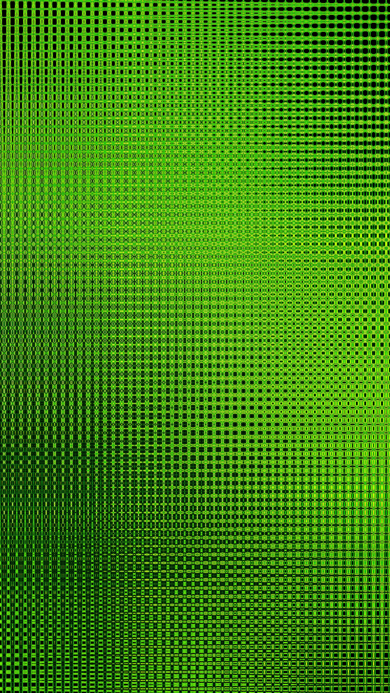
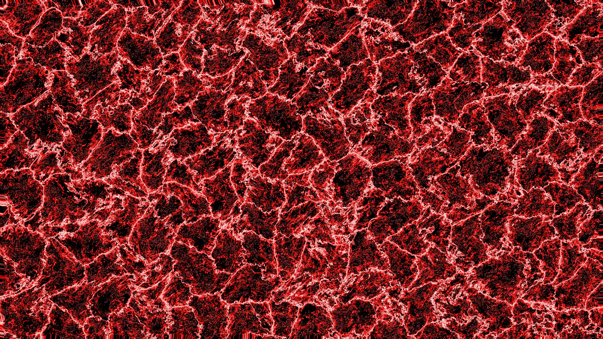

音訊再剪輯
將短句、節奏與配樂轉化成新的聽覺梗。
MEME ARCHIVE / 非官方整理
從人物名稱到二次創作，這是一份以網路文化視角整理的非官方迷因導覽。
開始導覽↓田所皓二是日本成人影像產業出身的公開人物；其名字與影像片段後來被部分網路社群挪用、再剪輯，形成稱為「淫夢」的迷因脈絡。
這類創作的核心在於反覆引用、音訊重組與誇張的情境拼貼。理解其傳播時，也應避免將迷因騷擾或套用到真實人物身上。
閱讀使用提醒 →

以下是常見的文化現象整理，不涉及原始成人內容；迷因的趣味通常來自脫離原脈絡後的荒誕重組。
將短句、節奏與配樂轉化成新的聽覺梗。
以字幕、轉場與誇張對照創造反差感。
熟悉的用語在社群裡反覆變形、延伸。
04 / 延伸閱讀